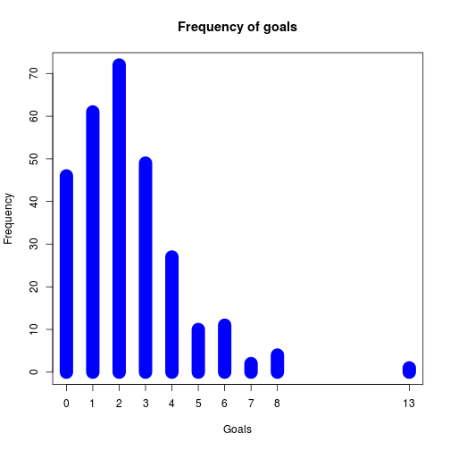

---
## Purpose of Application
* Analyses data from all soccer matches of the national teams since 1930.
* The application is accessible online here: https://efsa.shinyapps.io/soccerAnalytics/
---
## Data
```{r echo=FALSE,results='hide',message=FALSE}
source("../analysis.r")
games <- loadData()
countryStats <- countryStats("DEU",games)
```
* data set of 7560 football matches
* from 1930 onward
* all big tournaments
The application has the following features:
---
## Features of application
The application has the following features:
* Selection of country via drop down
* Dynamic update of 4 different statistics
+ Over all goals of the country
+ histogram of the distribution of the umber of goals
+ Overall points (0 for loss, 1 for draw,2 for win) of the country
+ Distribution of the match results
Do see the statistics for country "DEU" (= Germany):
---
## Usage example
Do see the statistics for country "DEU" (= Germany):
* The user selects "DEU" in the drop down
* -> Statistics of selected country get updated

---
## Screenshot of a plot with the goals distribution for Germany
```{r echo=FALSE,warning=F}
plot(table(countryStats$goals),lwd = 20,xlab = "Goals",ylab = "Frequency",
col="blue",
main = "Frequency of goals"
)
```
| Purpose of Application | 1 |
|---|---|
| Data | 2 |
| Features of application | 3 |
| Usage example | 4 |
| Screenshot of a plot with the goals distribution for Germany | 5 |
| Table of Contents | t |
|---|---|
| Exposé | ESC |
| Full screen slides | e |
| Presenter View | p |
| Source Files | s |
| Slide Numbers | n |
| Toggle screen blanking | b |
| Show/hide slide context | c |
| Notes | 2 |
| Help | h |